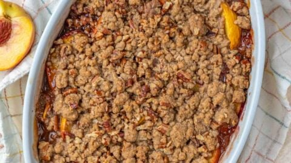

Peach Cobbler
This recipe will be for a simple, warm and delicious peach cobbler. Made with fresh (or canned) peaches, cinammon, and topped with a biscuit-like dough,
this sweet dish is perfect for the fall or summer time. This cobbler recipe can be slightly tweaked if substitutions are preferred but for more accurate results
stick to what's been tried and tested!
Ingredients:
- 1/4 cup unsalted butter
- 1 cup white sugar
- 4 cups peaches
- 1 tablespoon lemon juice
- 1 cup all-purpose flour
- 1 tablespoon baking powder
- 1/4 teaspoon salt
- 1 cup milk
- Preheat oven to 375 degrees Fahrenheit
- Melt butter in 9x9 or 9x13 baling dish
- While butter is melting, bring 1/4 cup sugar, peach slices, and lemon juice to a boil
over high heat unti softened and juice is extracted from peaches
- Combine flour, rest of sugar, baking powder and milk in a mixing bowl. While stirring, add milk until dry ingredients are moistened
- Pour batter over hot butter pan, then pur peach mixture over batter. Do not stir
- Bake for 30 minutes or until golden brown.
- Serve hot or cold
Home